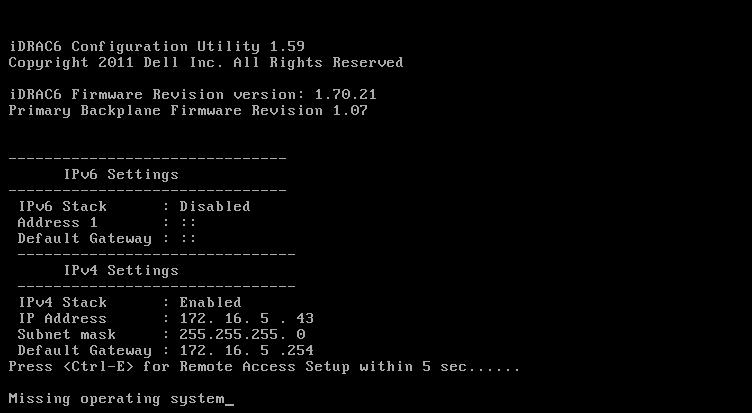
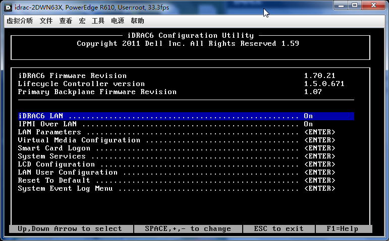
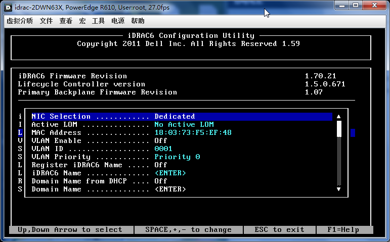
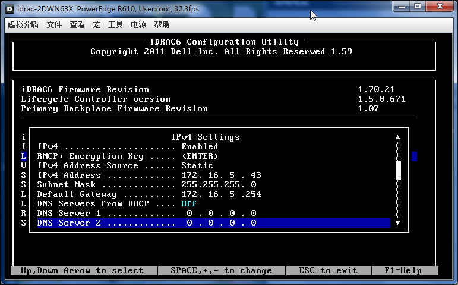

目录
|  |
|  |
|  |
|  |
我一般不再iDRAC中配置密码，因为我的密码比较复杂，输入起来比较麻烦。
比习惯使用 ipmitool set password 2 password "0KXcHhqPHXg7PrQ9" 设置比较复杂的密码。
# ipmitool -I open lan print 1
Set in Progress : Set Complete
Auth Type Support : NONE MD2 MD5 PASSWORD
Auth Type Enable : Callback : MD2 MD5
: User : MD2 MD5
: Operator : MD2 MD5
: Admin : MD2 MD5
: OEM :
IP Address Source : Static Address
IP Address : 172.16.5.46
Subnet Mask : 255.255.255.0
MAC Address : 18:03:73:f5:ef:87
SNMP Community String : public
IP Header : TTL=0x40 Flags=0x40 Precedence=0x00 TOS=0x10
Default Gateway IP : 172.16.5.254
Default Gateway MAC : 00:00:00:00:00:00
Backup Gateway IP : 0.0.0.0
Backup Gateway MAC : 00:00:00:00:00:00
802.1q VLAN ID : 1
802.1q VLAN Priority : 0
RMCP+ Cipher Suites : 0,1,2,3,4,5,6,7,8,9,10,11,12,13,14
Cipher Suite Priv Max : aaaaaaaaaaaaaaa
: X=Cipher Suite Unused
: c=CALLBACK
: u=USER
: o=OPERATOR
: a=ADMIN
: O=OEM
登陆Linux服务器使用ipmitool命令行修改drac密码
ipmitool user list [channel number] # 列举用户及用户ID ipmitool user set password [user id] [password] # 更改密码
/sbin/service ipmi start # ipmitool user list 2 ID Name Enabled Callin Link Auth IPMI Msg Channel Priv Limit 2 root true true true true ADMINISTRATOR ipmitool set password 2 password "chen" #dell 1950用法 ipmitool set password 2 "chen" #dell 2950用法,去掉后一个password关键字
R160 用法
# ipmitool user list 2 ID Name Callin Link Auth IPMI Msg Channel Priv Limit 2 root true true true ADMINISTRATOR # ipmitool user set password 2 your_password
FreeBSD
cd /usr/ports/sysutils/ipmitool make install kldload ipmi ipmitool user set password 2 "chen"